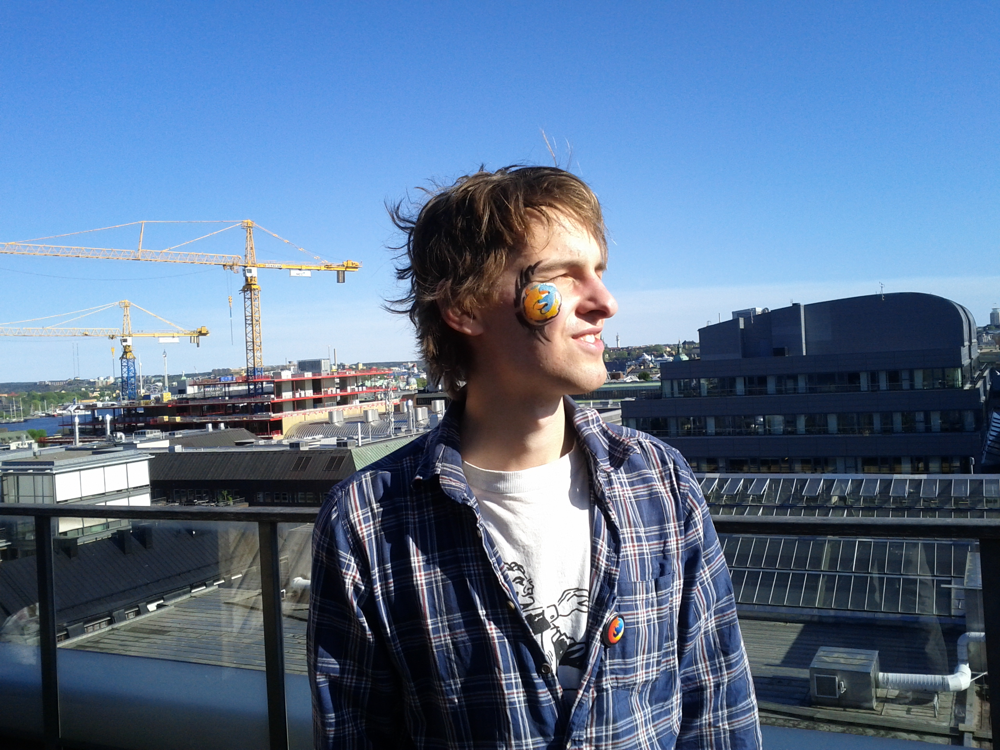

the Swedish Mozilla Community: One year later
the Swedish Mozilla Community: one year later


- What is Mozilla?
- The Swedish Mozilla community
a global community of people who believe that openness, innovation, and opportunity are key to the continued health of the Internet.
A non-for profit foundation with the purpose of a Internet built by open technology.
- The Internet is a global public resource that must remain open and accessible.
- The Internet should enrich the lives of individual human beings.
- Individuals' security on the Internet is fundamental and cannot be treated as optional.
- Individuals must have the ability to shape their own experiences on the Internet.
Firefox 29 celebration (May)


Refocus

Thanks for your attention!
